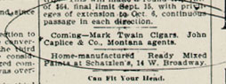

AD IN ANACONDA STANDARD (July 1885)
Newspaper PublicityThe picture at right appeared in both the Minneapolis Tribune and the Minneapolis Journal in advance of MT's talk in that city, suggesting that it was supplied to papers along the tour route by Pond or one of his correspondents. Pond also prepared and distributed press releases that papers used as the basis for their advance coverage of MT's lecture, although as you'll see from the sampling of news reports listed below, editors reshaped Pond's material, and often wrote their own accounts of MT's life and work, or of the excitement and special preparations that were growing up around his imminent arrival. The Anaconda Standard items include an account of MT's early days in Nevada, based on interviews with former acquaintances currently living in Montana, that offers a different version of the anecdote MT uses to end Roughing It. |